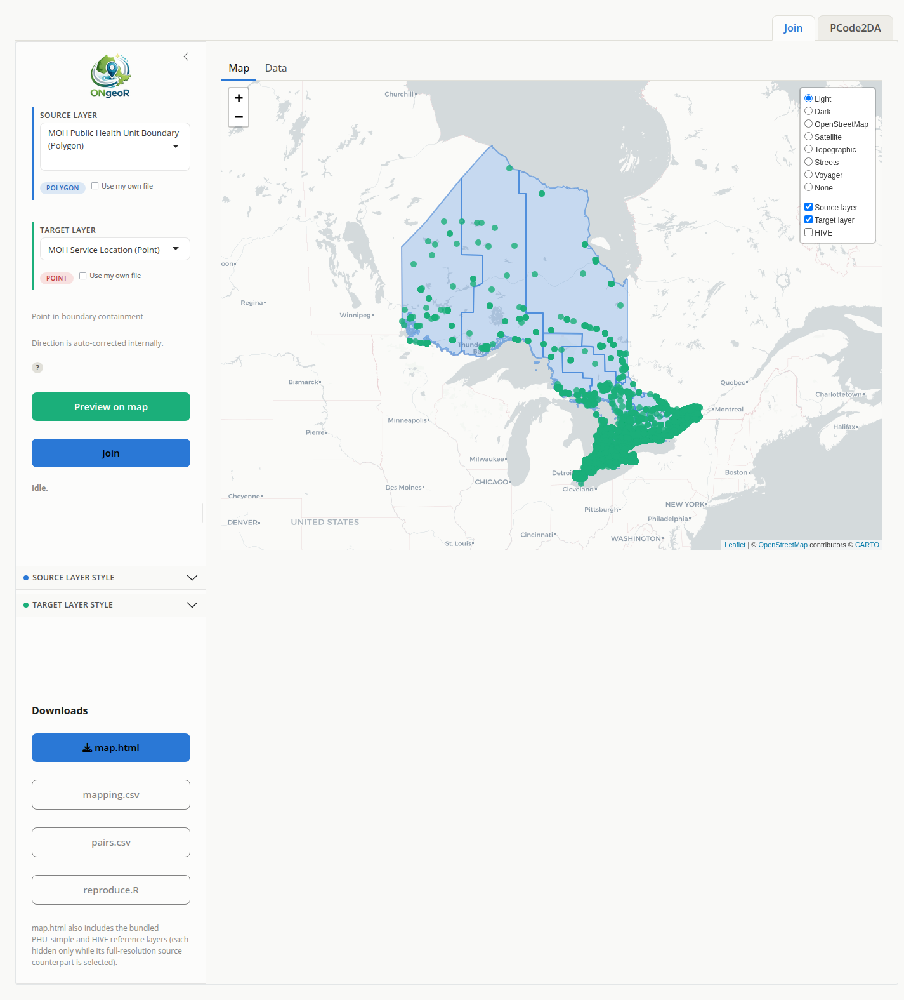

Put your Ontario points on the right map, and be able to prove it later.
ONgeoR takes a list of locations – clinics, schools, long-term care homes, incidents, postal codes – and resolves them to the geography your work actually reports on: Public Health Units, Ontario Health Regions, municipalities, census areas. It fetches the boundaries live from authoritative services, does the spatial join, and hands back a table that carries its own provenance.
Drive it from R, or from a point-and-click Shiny app that needs no code at all – and that hands you the R script reproducing exactly what you just clicked.
What you get
Boundaries that are current, not whatever was bundled two years ago. Layers are retrieved at run time from the Ontario GeoHub (LIO) and Statistics Canada, then cached locally so repeat work is fast and offline-tolerant. Every retrieval records the source URL, the timestamp, and the licence. Ontario amalgamated its Public Health Units in 2025, 34 down to 29 – anyone still holding a bundled shapefile is quietly wrong today. ONgeoR retrieves the current 29 and keeps the pre-2025 vintage available and clearly labelled for anyone who needs continuity.
Census geography without downloading Canada. The 2021 StatCan cartographic boundaries – census divisions, subdivisions, tracts, aggregate dissemination areas, population centres, federal electoral districts – are filtered to Ontario server-side, so national data never crosses the wire. Census subdivisions are 5,161 nationally and 577 here. Pass a bounding box and it narrows further on the fly: aggregate dissemination areas drop from 1,679 province-wide to about 100 for a city-sized window.
Postal codes without a PCCF licence. resolve_postal() maps Ontario postal codes to dissemination areas and resolve_postal_points() to coordinates, both built on the open, checksum-verified OPCC correspondence tables. Nothing to procure, and the checksum means you know you got the table you thought you got.
A join that picks itself. You should not have to remember whether a pairing calls for point-in-polygon, areal apportionment, or raster sampling. build_link() reads the geometry pair and chooses. link() and nearest() are there when you want to be explicit, and build_crosswalk() emits weighted apportionment with provenance attached.
Interactive maps, not just static plots. map_layers() and map_nearest() produce Leaflet widgets you can pan, zoom, and hand to someone who does not use R.
Artifacts you can defend. Every crosswalk carries source, retrieval date, and method. A year from now you can show a reviewer exactly which boundary file, which method, and which day produced the number.
Why
Public health analysts, epidemiologists, and health-system planners in Ontario frequently need to:
- Map facilities (hospitals, long-term care homes, schools) to Public Health Units
- Link locations to Ontario Health Regions
- Build crosswalks between different geographic boundaries
- Document data sources and their provenance
ONgeoR provides a standardized, reproducible framework for these tasks without bundling large geospatial datasets that become stale or require constant maintenance.
What ONgeoR Does (v0.4)
- Provides a source registry with metadata for Tier 1 Ontario GeoHub (LIO) datasets
- Retrieves PHU boundaries, Ontario Health Regions, municipal boundaries, MOH service locations, airports, waste management sites, conservation authorities, ORWN railway stations, and Ontario water and weather monitoring stations at runtime, plus a bundled HIVE grid, a bundled offline subset of 2,407 monitoring stations, and a synthetic raster surface
- Links geometries by type with
link()(point-in-polygon, polygon-to-polygon, and raster sampling) andnearest()(k-nearest and radius search), resolves records by identifier or name withresolve(), resolves Ontario postal codes to dissemination areas withresolve_postal(), and providesbuild_link()as a single no-choice entry point that picks the linking operation from the geometry pair - Generates auditable crosswalk tables with full provenance metadata via
build_crosswalk(), including weighted apportionment;build_intersection()returns every overlapping polygon pair with area shares in one pass - Retrieves 2021 Statistics Canada census cartographic boundaries with
retrieve_census(), filtered to Ontario server-side, with optional bounding-box narrowing for the finer geographies - Draws interactive leaflet maps with
map_layers()and nearest-match maps withmap_nearest() - A point-and-click Shiny app is provided by the companion package ONgeoRapp
See ROADMAP.md for planned additional sources and performance work.
What ONgeoR Does Not Do
- Bundle large geospatial datasets inside the package
- Permanently maintain or host boundary files
- Provide licensed or restricted data (e.g., PCCF postal code files)
- Replace authoritative data sources – it retrieves from them, not replaces them
Design Principles
- External data, not bundled – all data is retrieved from authoritative sources at runtime
- Source metadata tracking – every retrieval records source URL, date, and license
- Reproducible workflows – crosswalks include full provenance (source, date, retrieval timestamp)
- Lightweight dependencies – minimal package footprint (sf, httr2, yaml, tibble, rlang, leaflet, terra, htmlwidgets)
- Community-extensible – users can suggest new data sources via GitHub issues
Installation
# Install from GitHub
# install.packages("pak")
pak::pkg_install("github::lennon-li/ONgeoR")Quick Start
library(ONgeoR)
# List available data sources
list_sources()
# Get metadata for a specific source
get_source("phu_boundaries")
# Retrieve PHU boundaries from the Ontario GeoHub (LIO) REST service
phu <- retrieve_phu()
# Create sample points (e.g., hospitals)
points <- data.frame(
point_name = c("Toronto", "Ottawa", "Thunder Bay"),
lon = c(-79.3832, -75.6972, -89.6306),
lat = c(43.6532, 45.4215, 48.3822)
)
# Link points to Public Health Units (point-in-polygon)
result <- link(points, phu)
print(result)
# Find the 3 nearest MOH service locations to each point
facilities <- nearest(points, retrieve_moh_service_locations(), k = 3)
# Resolve an airport by its identifier
airport <- resolve(retrieve_airport(), "CYYZ")
# Ontario water and weather monitoring stations (bundled, works offline)
stations <- retrieve_monitoring_stations_simple()
# Resolve postal codes to dissemination areas (first call downloads the
# correspondence table and caches it)
postal <- resolve_postal(c("M5S 2C6", "K1A 0N9"))
# Build a crosswalk table between two polygon layers
municipal <- retrieve_municipal("upper")
crosswalk <- build_crosswalk(municipal, phu, method = "intersects")
# Or use build_link() to let the geometry pair decide automatically
result <- build_link(municipal, phu)
# Draw an interactive map of health-unit boundaries and hospitals
map_layers(phu, retrieve_moh_service_locations(service_type = "Hospital"))Geometry linking matrix
build_link() inspects the geometry types of the two layers and dispatches to the appropriate operation. The table below is rendered from the same matrix that drives the Shiny app.
| source_kind | target_kind | mode | what_it_does | output |
|---|---|---|---|---|
| point | point | Nearest | Each target point is matched to its single nearest source point. | nearest table |
| point | polygon | Containment | Each point is matched to the boundary it falls inside. | crosswalk |
| point | raster | Sampling | Each point takes the value of the cell containing it. | linked values table |
| polygon | point | Containment | Direction is auto-corrected internally. | crosswalk |
| polygon | polygon | Intersection | Every overlapping pair, with the share of each target covered and the share of each source falling inside. | intersection table |
| polygon | raster | Sampling | Each polygon samples the raster values it overlaps. | linked values table |
| raster | point | Sampling | Raster reduced to cell centroids. | linked values table |
| raster | polygon | Cell sampling into boundaries | Each cell centroid is matched to the boundary it falls inside. | linked values table |
| raster | raster | Not supported | Not supported; align/resample with terra first. | none |
Shiny app
The point-and-click app lives in its own package, ONgeoRapp. It is running live at https://biostats-ongeor.share.connect.posit.cloud/ – no install, no R required. Pick the points you have, pick the boundaries you want them joined to, click Preview on map, then Join. No R code required.
What comes out is the part worth caring about:
| Download | What it is |
|---|---|
| Shape | The joined geometry, carrying every target attribute plus everything joined to it – GeoPackage and shapefile, with a field-name map because shapefiles truncate names at 10 characters |
| Table | The results table and the full pair-level crosswalk |
| Map | The interactive Leaflet map, standalone – open it in any browser, hand it to anyone |
| Script | A runnable reproduce.R that regenerates the whole thing from source |
That last one is the point. The app is not a black box you have to trust: it tells you what it did, in code you can read, re-run, and put in an appendix.

ONgeoRapp: PHU boundaries and MOH service locations previewed before joining.
pak::pkg_install("github::lennon-li/ONgeoRapp")
ONgeoRapp::run_app()It was split out so that ONgeoR itself stays a lean data-and-linking package.
Data Sources
ONgeoR retrieves data from authoritative Ontario sources including:
- Ontario GeoHub (geohub.lio.gov.on.ca) – provincial boundaries, facilities, infrastructure
- Ministry of Health – health facility locations (via the GeoHub LIO services)
- Statistics Canada (geo.statcan.gc.ca) – 2021 census cartographic boundaries, filtered to Ontario server-side
- OPCC – open, checksum-verified postal code correspondence tables
All sources are documented in the package’s source registry with metadata including:
- Source owner and jurisdiction
- License terms
- Update frequency
- Direct download URLs
Contributing New Data Sources
Users can suggest new Ontario data sources by opening a GitHub issue using the “Data source request” template. Include:
- Source name and URL
- Description of what the source contains
- Known license or terms of use
- Any concerns about quality or completeness
Roadmap
See ROADMAP.md for the full development plan.
Contact
Lennon Li – lennon.yeli@gmail.com